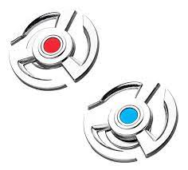

modificador de tamanho dos objetos

Você já imaginou ter o poder de encolher ou aumentar objetos com apenas um toque? Agora, graças ao nosso diminuidor de objetos futurista, isso é possível! Com esse dispositivo, você pode diminuir ou aumentar o tamanho de praticamente qualquer coisa que desejar, desde carros e móveis até objetos de arte .

o disco azul ira aumentar o objeto até 2,5m por 3,0m

o disco vermelho ira diminuir até 11 x 11 x 3.5 cm,ou um tamanho de um carrinho hot wheels
Nosso modificador de tamanho dos objetos é a ferramenta perfeita para quem busca praticidade e versatilidade em seu dia a dia. Com ele, você pode economizar espaço valioso em sua casa ou escritório, tornando os objetos grandes muito mais manejáveis.
.jfif)
um dos nossos cliente aprovou e o usou em um filme
cena que ele utilizou o produto
Imagine poder guardar um carro grande em uma garagem pequena, ou encolher um sofá volumoso para caber em um espaço apertado.

No entanto, é importante ressaltar que o modificador de objetos futurista é projetado apenas para objetos inanimados . Não deve ser utilizado em animais ou pessoas.